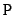

suivant: Décomposition LU (compatible TI):
monter: Factorisation des matrices
précédent: Décomposition QR (compatible TI)
Table des matières
Index
Décomposition LU : lu
lu a comme argument une matrice carrée A d'ordre n
(numérique ou symbolique).
lu(A) renvoie une permutation p de 0..n - 1, une matrice
triangulaire inférieure L avec des 1 sur sa diagonale et une matrice
triangulaire supérieure U.
Ces matrices sont telles que :
On peut aussi définir à partir de p la matrice de permutation Pn
par :
Pn[i, p(i)] = 1 et
Pn[i, j] = 0 si
j  p(i).
p(i).
C'est la matrice obtenue en permutant, selon la permutation p, les lignes de
la matrice unité.
On peut utiliser la fonction permu2mat :
permu2mat(p) renvoie la matrice  d'ordre n.
On tape :
(p,L,U):=lu([[3,5],[4,5]])
On obtient :
[1,0],[[1,0],[0.75,1]],[[4,5],[0,1.25]]
On a, en effet, n = 2 donc :
P[0, p(0)] = P2[0, 1] = 1, P[1, p(1)] = P2[1, 0] = 1, P = [[0, 1],[1, 0]]
Vérification :
On tape :
permu2mat(p)*A; L*U
On obtient:
[[4.0,5.0],[3.0,5.0]],[[4.0,5.0],[3.0,5.0]]
Il faut noter que la permutation est différente lorsque les données sont
exactes (le choix du pivot est plus simple).
On tape :
lu([[1,2],[3,4]])
On obtient :
[1,0],[[1,0],[3,1]],[[1,2],[0,-2]]
On tape :
lu([[1.0,2],[3,4]])
On obtient :
[1,0],[[1,0],[0.333333333333,1]],[[3,4], [0,0.666666666667]]
suivant: Décomposition LU (compatible TI):
monter: Factorisation des matrices
précédent: Décomposition QR (compatible TI)
Table des matières
Index
Documentation de giac écrite par Renée De Graeve